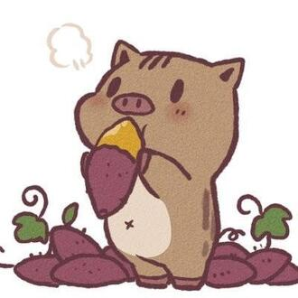

Auteur
Natsu Hyūga est l'autrice d'une série de light novel intitulée « Les Carnets de l'Apothicaire ». Publiée à l'origine depuis 2011, la série est acquise par Shufunotomo qui la publie en un volume relié sorti en 2012, puis la réédite en 2014 en tant que série de ligth novel. L'œuvre est adaptée en une série manga, prépubliée sous le titre original dans le Monthly Big Gangan à partir de mai 2017 et publiée en volumes reliés par l'éditeur Square Enix.
- Nom : Hyuuga Natsu
- Nationalité : Japonaise
- Genre : Inconnu
- Statut : En activité
Synopsis
À 17 ans, Mao Mao a une vie compliquée. Formée dès son jeune âge par un apothicaire du quartier des plaisirs, elle se retrouve enlevée et vendue comme servante dans le quartier des femmes du palais impérial ! Entouré de hauts murs, elle est coupé du monde extérieur. Afin de survivre dans cette prison de luxe grouillant de complots et de basses manœuvres, la jeune fille tente de cacher ses connaissances pour se fondre dans la masse.
Mais, quand les morts suspectes de princes nouveau-nés mettent la cour en émoi, sa passion pour les poisons prend le dessus. Elle observe, enquête... et trouve la solution ! En voulant bien faire, la voilà repérée... Jinshi, haut fonctionnaire aussi beau que calculateur, devine son talent et la promeut goûteuse personnelle d'une des favorites de l'empereur. Au beau milieu de ce nid de serpents, le moindre faux pas peut lui être fatal !
Personnages Principaux
Mao Mao (猫猫)
Voix japonaise : Aoi Yūki
Fille d'un apothicaire vivant à la périphérie de la ville et âgée de 17 ans à peine, Mao Mao travaille au service de courtisanes dans le quartier des plaisirs. Sa vie bascule quand elle est kidnappée par des bandits qui la vendent au palais impérial. Elle est entraînée dans les intrigues du palais et grâce à ses connaissances insoupçonnables en matière de poisons et une curiosité insatiable pour tout ce qui y touche, elle est repérée par l'intendant de la cour, Jinshi. En sauvant la fille de la concubine de l'empereur, Gyokuyō, elle devient sa dame de compagnie et sa goûteuse officielle.
Jinshi (壬氏)
Voix japonaise : Takahiro Sakurai
Eunuque à la beauté surnaturelle, il officie à la cour intérieure où résident les concubines et leur personnel respectif en tant qu'intendant. Alors que son visage attire les hommes et les femmes du palais, il se trouve plutôt attiré par Mao Mao et adore la taquiner car c'est l'unique personne qui semble ne pas être intéressée par lui C'est l'un des deux grands protagonistes des Carnets de l'Apothicaire, avec Mao Mao. Généralement décontracté et taquin, au point où Maomao se demande ce qu'il fait de ses journée, Jinshi est pourtant loin de prendre son travail à la légère, bien au contraire. C'est un homme sérieux et méthodique qui a, de plus, la confiance de l'empereur. Ce dernier l'a d'ailleurs affecté à la cour intérieure pour tester la chasteté des concubines.
Gaoshun (高順)
Voix japonaise : Kenjiro Tsuda
Le bras droit de Jinshi. C'est un homme responsable qui est quelquefois exaspéré par son maître. Il reste néanmoins assez inquiet des réactions parfois étonnantes du jeune homme, surtout lorsqu'il est question de Maomao, qu'il a surnommé "Shao Mao" ("petit chat"). Calme, silencieux et efficace, il est le parfait opposé de son supérieur, du moins, selon Maomao. Il travaille à plusieurs reprises avec la jeune apothicaire pour résoudre divers cas.
Gyokuyō (玉葉)
Voix japonaise : Yōko Hikasa
Concubine favorite de l'Empereur vivant dans la cour inférieure, c'est une jeune femme aux cheveux rouge vif, sage et prudente. Elle lui a d'ailleurs donné une fille appelée Shaolin âgée de 6 mois, et possède quatre dames de compagnie à son service, elle est mère d'une petite fille. Elle prend Mao Mao comme dame de compagnie en la remerciant de l'avoir prévenue que du maquillage mettait en danger la vie de son bébé. Bien qu'étant la favorite, sa place est remise en question du fait qu'elle n'ait pas mis au monde un garçon, héritier au trône. Une autre concubine de haut rang, Lifa, se rapproche alors de cette place ayant eu un fils.
Opening
Source : Les Carnets de l'Apothicaire, Wikipédia